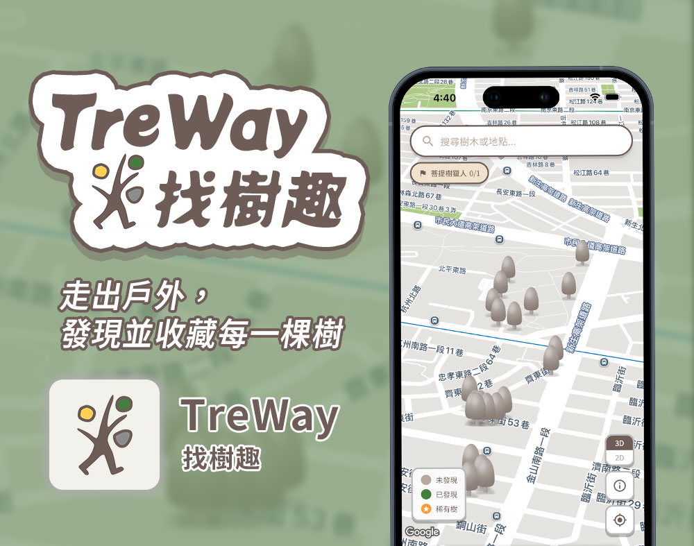
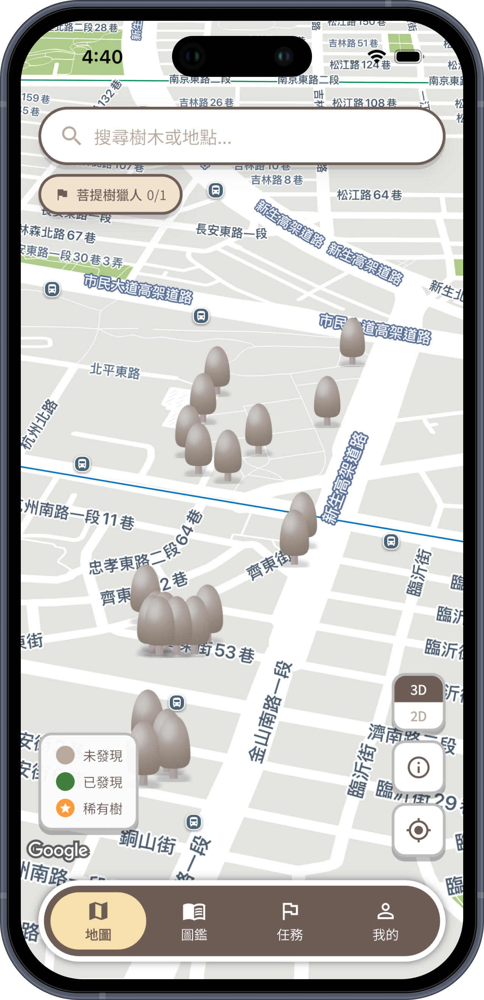
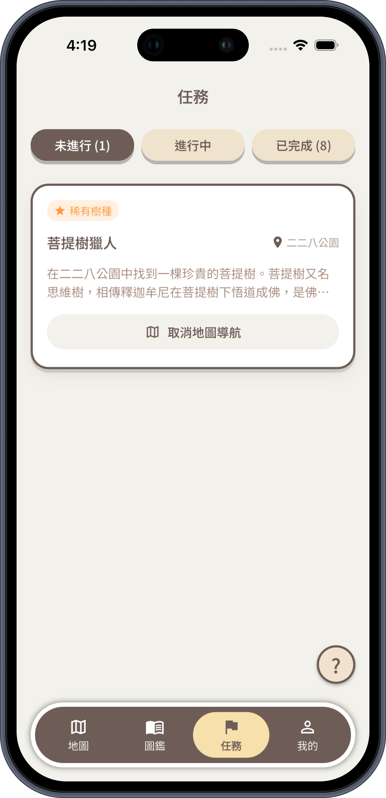
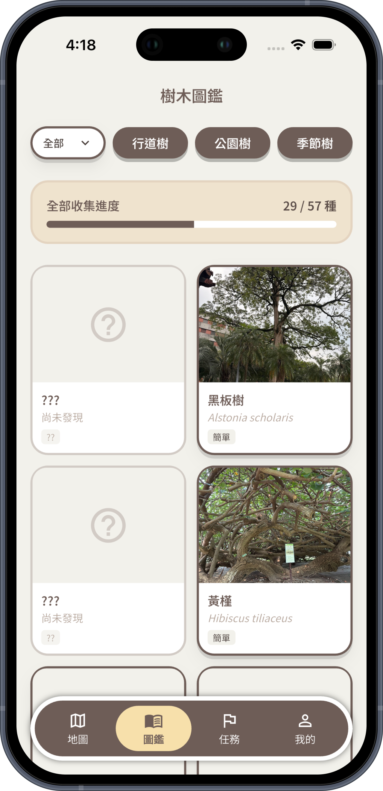

v1.1.0
最新
2026.08.10
- [新增]首頁地圖新增 2D/3D 立體視角切換
- [優化]任務樹、稀有樹、已解鎖等標記全面優化
- [優化]更新品牌識別與啟動頁視覺
把散步變成一場尋樹冒險。用地圖找到附近的樹木，靠近就能解鎖樹種知識、收集圖鑑與徽章，完成季節任務。最適合親子共度的自然教育時光。

版本更新 / WHAT'S NEW
打開地圖探索附近樹木，靠近即可解鎖樹種知識，讓熟悉的街道與公園變成一場自然尋寶。

把日常散步變成有目標的戶外遊戲，透過季節任務、公園樹與稀有樹探索，越探索越有成就感。

從認識樹種到留下照片與解鎖紀錄，把每一次戶外發現累積成專屬圖鑑，讓自然探索變成值得持續的收藏體驗。

規格 / SPEC
走在路上時，常常會遇見一棵令人印象深刻的樹，卻不知道它的名字；而身邊也有許多值得細細欣賞與了解的老樹，卻容易被忽略。
因此，我希望結合公開資料打造一款以「發現與探索」為核心的樹木地圖 App。目前以雙北地區的公共區域為起點，搭配實地探訪、拍照與確認樹木資訊，逐步累積完整的樹木資料庫。
使用者也能透過 App 拍照記錄自己探訪過的樹木，留下每一次與城市綠意相遇的足跡，讓認識樹木的過程更有趣，也更有收藏價值。
支持我們 / SUPPORT
TreWay 所有功能永久免費；頁面會顯示 Google 橫幅廣告。贊助一杯咖啡即可移除廣告，並支持我們持續開發。
| 項目 | 免費 | 贊助咖啡 ☕推薦 |
|---|---|---|
| 所有找樹與地圖功能 | ✓ | ✓ |
| 樹種圖鑑與知識 | ✓ | ✓ |
| 季節任務、徽章與排行榜 | ✓ | ✓ |
| 2D／3D 地圖探索 | ✓ | ✓ |
| 橫幅廣告 | 顯示 | 不顯示 |
| 支持持續開發 | — | ✓ |
| 費用 | 免費 | 一杯咖啡 |
功能完全一樣，差別只在廣告；覺得好用的話，一杯咖啡就能移除廣告並支持我們持續開發！
常見問題 / FAQ
需要。TreWay 透過你的位置在地圖上顯示附近的樹木標記並解鎖知識。位置的使用方式請參閱隱私權政策。
地圖探索與尋樹功能需要網路連線以取得地圖與樹木資料。
App 分級為 13+，很適合親子在家長陪同下一起進行自然散步與探索。
下載 TreWay，把下次散步變成尋樹冒險。